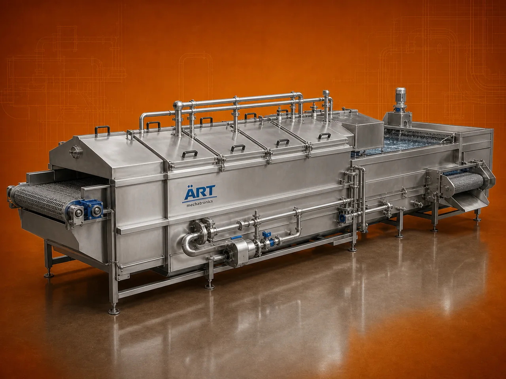

Blancher Machine (Industrial Vegetable & Food Blanching System)
A Blancher Machine, also known as a Blanching Machine or Industrial Blancher, is a critical food processing equipment used for pre-treatment of vegetables, fruits, nuts, and food products using hot water or steam.

About the Blancher Machine
Blanching is an essential step in food processing to inactivate enzymes, preserve natural color, improve texture, and enhance shelf life, especially before processes like freezing, drying, frying, or packaging.
Blancher machines are widely used in vegetable processing plants, frozen food industries, snack manufacturing, and agro processing units, where consistent product quality and processing efficiency are required.
ART Mechatronics offers high-performance blancher machines, engineered for uniform heat treatment, hygienic operation, and energy-efficient performance.
One machine, many names
Buyers search for this equipment under many terms — we manufacture all of them:
Working Principle of Blancher Machine
Types of Blancher Machines
Industries Using Blancher Machine
🥦 Vegetable Processing Industry
- Peas, beans, carrots
🍟 Frozen Food Industry
- Pre-freezing treatment
🍃 Food Processing Industry
- Fruits and vegetables
🥜 Nut Processing Industry
- Skin removal and treatment
🌾 Agro Processing Industry
- Crop pre-treatment
Features & Advantages
- Preserves natural color and nutrients
- Improves shelf life
- Uniform and controlled processing
- Essential pre-treatment step
- Hygienic and food-grade design
- Energy-efficient system
- Suitable for multiple products
Technical Highlights
- Capacity: Batch / Continuous (customizable)
- Heating Type: Hot water / Steam
- Construction: Stainless Steel (food grade)
- Temperature Control: Adjustable
- Conveyor System: Optional
- Operation: Automatic / Semi-automatic
Turnkey Blanching Solutions
ART Mechatronics offers:
- Complete blancher system design
- Integration with washing, drying, frying, and packaging lines
- Heating and cooling system setup
- Installation & commissioning
- After-sales service & AMC
Why Choose Art Mechatronics
- Expertise in food processing systems
- Customized solutions for different products
- Hygienic and high-performance machines
- Energy-efficient designs
- Proven industry experience
Applications
- Vegetable Processing Plants
- Frozen Food Processing Units
- Food Manufacturing Units
- Agro Processing Plants
- Snack Processing Plants
Industries that use the Blancher Machine
Related Heating & Drying machines
Get pricing & specs for the Blancher Machine
Share the product, target capacity, current process and plant location. These details help our engineers discuss the right machine or line configuration.
One partner, from design to start-up
ART Mechatronics designs, manufactures, installs and commissions your Blancher Machine solution with regional presence in India, UAE and Thailand.